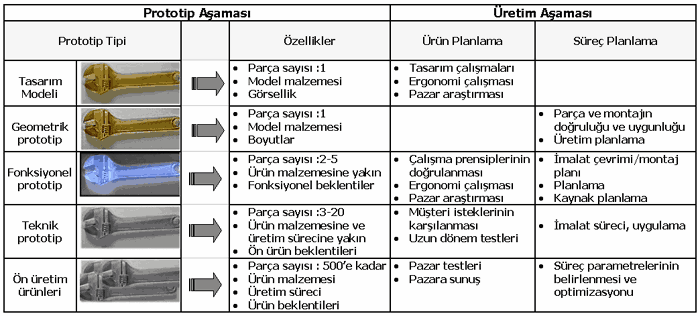

3.
CAD/CAM Uygulamalarý
CAD/CAM
entegrasyonunun iyi bir þekilde saðlanmasýyla ürün kalitesi,
maliyet ve sürelerde avantajlar elde edilebilir. Üründe
veya imalatý sýrasýnda ortaya çýkabilecek bir çok sorun
daha CAD aþamasýndayken kolaylýkla giderilebilir. Tasarým
ve imalat sürecinde oldukça yüksek esneklik saðlar. Ýlk
yatýrým maliyetleri göreceli yüksek olsa da zamanla üretici
kara geçecektir.
3.1.
Otomotiv Sektöründe
Otomobil üreticileri bilgisayar tabanlý sistemleri kullanarak
ürün kalitesini arttýrmak ve kýsa geliþtirme zamanlarý elde
etmeyi amaçlarlar. Þekil 6 'da, ürün geliþtirme iþlemlerinin
ve bir araç tasarýmýnda kullanýlan destek sistemleri gösterilmiþtir.
Tasarým iþi öncelikle fikir oluþturma (conseptualization)
ile baþlar ve ürün planlama ile devam eder. Bir otomobil
temel üç bölümden meydana gelir. Bunlar; Motor bölümü, arka
bagaj ve yolcu bölümü. Gövde resimleri model oluþturmada
(prototip) kullanýlýr. Bu prototipler test edilir ve test
sonuçlarý geri beslemeli olarak parça resimlerinde gerekli
deðiþikliklere kadar gider. Bu akýþ aþaðýdaki þekilde gösterilebilir
[3].
Þekil 6. CAD/CAM ve ürün geliþtirme uygulamasý
3.2.
Enjeksiyon Kalýbý Tasarýmýnda
Seri
üretimi yapýlacak bir plastik tür malzemenin kalýbý çok
önemlidir. Tasarým maliyetleri ve süresi düþünüldüðünde
hatalar en aza indirilmiþ olmalýdýr. CAD/CAM entegrasyonu
ile bu iþlem daha kolay ve ucuz bir þekilde yapýlabilmektedir.
Bütün iþler üretilecek parçanýn CAD resminin oluþturulmasý
ile baþlar. Deðiþik katý model oluþturma ve yüzey modelleme
iþlemleri ile parça tasarýmý kolaylýkla yapýlabilir.
Parça
tasarlandýktan sonra üretimi için kalýp tasarýmýna geçmek
gerekir. Ancak bu plastik enjeksiyon üretiminin baþarýlý
olup olamayacaðýnýn baþtan bilinmesinde yarar vardýr. Aksi
halde imal edilecek pahalý kalýplar ve seçilecek plastik
malzeme baþarýsýz kalabilir. Bu nedenle parça tasarýmý sonrasý
imalatýn bir benzetimini yapmak gerekebilecektir. Bu tür
çalýþmalar geliþtirilmiþ özel programlar kullanýlarak yapýlabilir.
Programýn kullanýlmasý için parçanýn üzerine bir að geçirmek
(meshing) gerekir. Sonra, plastik enjeksiyon iþleminin benzetimi
gerçekleþtirilebilir. Burada kalýp boþluðuna zamana baðlý
olarak erimiþ plastik malzemenin nasýl dolduðunu görmemiz
yararlý olacaktýr. Yine ayný þekilde parçanýn soðuma durumu
ve ortaya çýkacak ürünün çekme ve çarpýlma durumlarýný da
gözlemlemek bize kalýp tasarýmýnda yarar saðlayacaktýr (Þekil
7).
Þekil 7. Malzeme akýþ (doldurma "solda"),
soðuma "ortada" ve çekme-çarpýlma analizleri
Benzetim
çalýþmasý ile kalýbýn tamamen doldurulup doldurulamayacaðý
kontrol edilmiþ olur. Bunun yanýnda kalýp dolduðunda parça
üzerindeki sýcaklýk daðýlýmýný da görebilmeleri yaralý olmaktadýr.
Ýmalat hýzýnýn yüksek olmasý parçanýn kýsa zamanda kalýptan
çýkarýlmasý gibi faktörler bunu gerektirir. Plastik enjeksiyon
iþleminde sývý ve sýcak olan plastiðin kalýp boþluðunun
her tarafýný doldurmasý istenir. Yani parçanýn tam olarak
elde edilmesi gerekir. Bunun için enjeksiyon basýncýnýn
iyi ayarlanmasý gerekir. Kalýp tasarýmcýlarýnýn bu nedenle
basýnç daðýlýmýný da incelemeleri gerekebilir. Bu da özel
programdan elde edebilir. Tasarýmcý tüm bu bilgileri kullanarak
homojen bir daðýlým saðlayabilir. Gerekli hallerde enjeksiyon
noktasý birden fazla verilebilir, kalýbý soðutma/ýsýtma
yöntemleri düzenlenebilir, yolluklar uygun þekilde tasarlanabilir.
3.3.
Hýzlý Prototip Ýmalatýnda
Bir
fikrin tasarýma dönüþmesi için modelinin oluþturulmasý zorunludur.
Grafik ekranda oluþturulan modeller bir yerden sonra ürünü
tam olarak gösterebilme noktasýnda yararlý olamayabilir.
Bazý geometrik ve fonksiyonel nedenler o tasarýmýn modelini
gerekli kýlmaktadýr.
Genelde
test aþamasýnýn daha düþük maliyette ve kýsa zamanda yapýlabilmesi
için model üzerinde yapýlacak analiz ve simulasyon iþlemleri
daha büyük önem taþýr (Þekil 8).
Þekil 8. Tasarým süreci ve prototip
Ürün
geliþtirme aþamasýnda modellere ve prototiplerin deðiþik
formlarýna ihtiyaç duyulur. Farklý ürün geliþtirme aþamalarý
için de deðiþik þekillerdeki prototiplere örneðin; tasarým
modeli, geometrik prototip, fonksiyonel prototip, teknik
prototip ve üretim öncesi parça þeklinde ihtiyaç duyulur.Üretilecek
eþ parçalarýn birbirlerine fiziksel olarak uygunluðunun
görülmesi, geometrik prototiplerle mümkün olmaktadýr. Fonksiyonel
test aþamasýnda 2...5 kadar fonksiyonel prototip üzerinde
yapýlan testlerle parçanýn almasý istenilen form veya mekanik
özellikler kontrol edilir. Takip eden geliþtirme aþamasýnda,
uygulamaya baðlý olarak 3...20 adet teknik prototip kullanýlýr
(Þekil 9).

Þekil 9. Ürün geliþtirme sürecinde prototip türleri
ve süreçler
Bilgisayar
yardýmýyla katý modeli oluþturulan bir ürünün prototipi
saatler mertebesinde (parçanýn büyüklüðü ve prototipleme
cihazýnýn hýzýna baðlý) elde edilebilir. Parçanýn karmaþýk
olmasý bunu etkilemez. Klasik imalat ile elde edilmesi imkansýz
prototipler bu yöntemlerle çok kolay þekilde imal edilebilirler.
Prototipler mümkün olduðu kadar sonuç parçaya uygun olmalýdýr.
Prototip üzerinde karar verilen deðiþiklikler, parçanýn
CAD modelinde yapýlarak tekrar prototipi üretilir. Böylelikle
parça veya kalýp üretildikten sonra çýkmasý muhtemel istenmeyen
durumlar, daha tasarým aþamasýnda iken çözülmüþ olur. Bu
amaçla bir çok hýzlý prototip üretim yöntemleri ortaya çýkmýþ
ve ülkemizde de yaygýn hale gelmiþtir. Bu teknolojilerden
bazýlarý þunlardýr; Stereolitografi (SL-Stereolithography),
Eritilmiþ Malzeme Yýðma (FDM-Fused Deposition Modelling),
Tabakalý Nesne Ýmalatý (LOM-Laminated Object Manufacturing),
Seçici Lazer Sinterleme (SLS-Selective Laser Sintering)
ve Katý Tabaka Kurutma (SGC-Solid Ground Curing) [4,5].
4.
Sonuç ve düþünceler
CAD/CAM
sistemleri ülkemizde imalatýn bir çok alanýnda yoðun bir
þekilde kullanýlmakta ve yaygýnlaþmaktadýr. Teknolojinin
birçok alanýnda olduðu gibi bu alanda da biz, mevcut sistemleri
kullanýr pozisyonundan ileri gidememiþizdir. Yeterli eleman
ve bilgi altyapýsý olduðunu düþündüðümüz halde teknoloji
üretimi istenilen düzeyde baþarýlamamýþtýr. Özellikle yazýlým
alanýnda, kaynaklarý kendinden ortaya konulmuþ bir ürün
hala yoktur veya çok özel þartlarda birkaç adedin (firmalarýn
kendi çaplarýnda veya kiþisel bazý modüller seviyesinde)
üzerinde deðildir. Mühendislik eðitimi ve daha da derinde
tüm eðitim sistemimizle birlikte, tasarým ve imalat sektörünün
mühendise verdiði önemin tekrar deðerlendirilmesiyle bahsedilen
teknolojileri üreten bir ülke olmak hiç te zor olmayacaktýr.
Bu yazýnýn, en azýndan bu düþünceyi hatýrlatmasý noktasýnda
yararlý olacaðýný ümit etmekteyim.
Bu
yazýyý gözden geçiren Dr. Þerafettin Engin'e teþekkürlerimi
sunuyorum.
Kaynaklar
1.
ASM INTERNATIONAL "Metals Handbook Ninth Edition ",
Volume 16, 1989
2. AKKURT M., "Bilgisayar Destekli Takým Tezgahlarý
(CNC) ve Bilgisayar Destekli Tasarým ve Ýmalat (CAD-CAM)
Sistemleri ", Birsen Yayýnevi, 1996
3. ASIA, K., TAKASHIMA S., "Manufacturing, Automation
Systems and CIM Factories ", Chapman & Hall, 1994
4. YAÐMUR L., "Hýzlý Prototip Üretim Teknolojileri",
Y. Lisans Tezi, ÝTÜ,1997
5. PFEIFER T., EVERSHEIN W., "Manufacturing Excellence",
Chapman & Hall, 1994